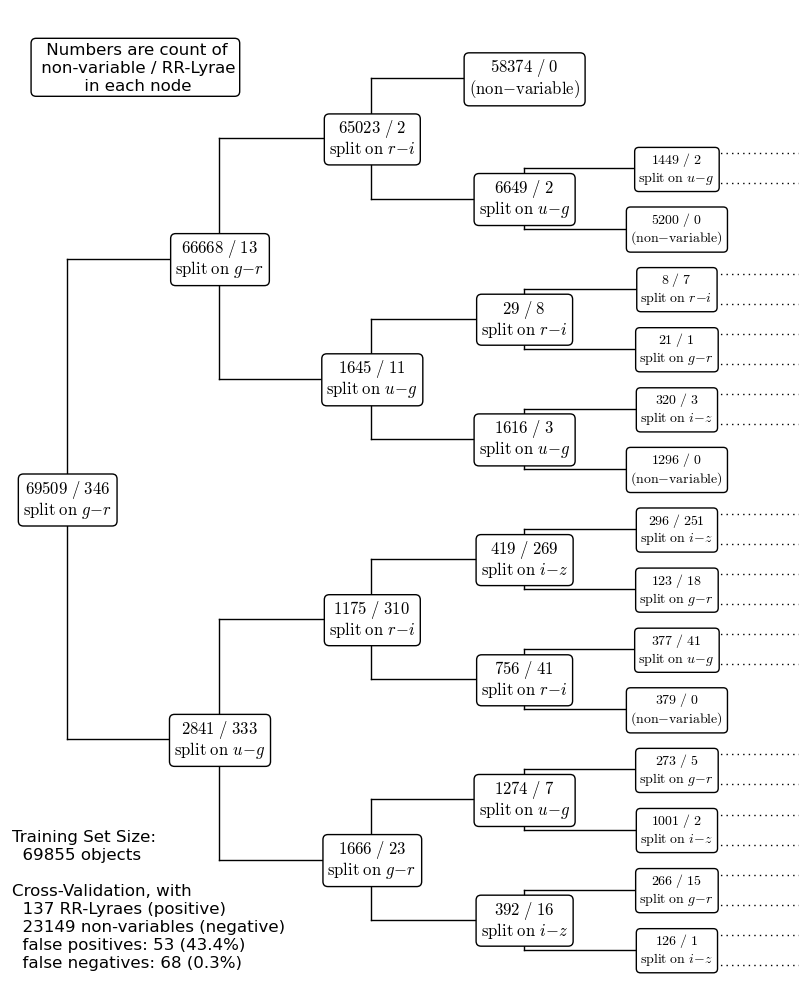

Decision Tree for RR-Lyrae Classification¶
This uses a decision tree to photometrically classify RR Lyrae variables, and plots a visualization of the first several levels of the tree.
----------------------------------------------------------------
partial training set: (69509 non-variable, 346 RR-Lyrae)
positive = RR-Lyrae, negative = non-variable
false positives: 53 (43.4%)
false negatives: 68 (0.3%)
----------------------------------------------------------------
full training set: (69509 non-variables, 346 RR-Lyraes)
positive = RR Lyrae, negative = non-variables
false positives: 53 (43.4%)
false negatives: 68 (0.3%)
# Author: Jake VanderPlas <vanderplas@astro.washington.edu>
# License: BSD
# The figure produced by this code is published in the textbook
# "Statistics, Data Mining, and Machine Learning in Astronomy" (2013)
# For more information, see http://astroML.github.com
import numpy as np
from matplotlib import pyplot as plt
from sklearn.tree import DecisionTreeClassifier
from astroML.datasets import fetch_rrlyrae_combined
from astroML.utils import split_samples
def get_x_position(level, n_levels, xmin=0.01, xmax=1):
dx = (xmax - xmin) / (n_levels - 1.)
return xmin + level * dx
def get_y_position(level, j, ymin=0, ymax=1):
n = 2 ** level
dy = (ymax - ymin) * 1. / n
return ymin + (j + 0.5) * dy
def draw_connections(x_positions, y_positions, children, i,
ax, linestyle='-k'):
for (c, y) in zip(children, y_positions):
if c == -1:
continue
ax.plot(x_positions[i - 1:i + 1], [y, y], linestyle, lw=1)
for j in range(0, 2 ** i, 2):
if children[j] == -1 or children[j + 1] == -1:
continue
ax.plot(2 * [x_positions[i - 1]], y_positions[j:j + 2],
linestyle, lw=1)
def visualize_tree(T, data, classes, labels=None, levels=5,
ymin=0, ymax=1, xmin=0, xmax=1, ax=None):
# to visualize the tree, we essentially need to re-build it: it doesn't
# store the list of points at each node.
if ax is None:
ax = plt.gca()
# get tree aspects
try:
# new versions of sklearn
T_children = T.tree_.children
except:
# old versions of sklearn
T_children = np.vstack([T.tree_.children_left,
T.tree_.children_right]).T
T_nsamples = T.tree_.n_samples
T_feature = T.tree_.feature
T_threshold = T.tree_.threshold
x_positions = get_x_position(np.arange(levels + 1), levels)
node_list = np.array([0])
new_data_masks = [np.ones(data.shape[0], dtype=bool)]
for i in range(levels):
y_positions = get_y_position(i, np.arange(2 ** i))
mask = (node_list != -1)
# plot the positions of the nodes
ax.plot(x_positions[i] * np.ones(2 ** i)[mask],
y_positions[mask], 'ok')
data_masks = new_data_masks
new_data_masks = []
# list node info
for j in range(2 ** i):
if node_list[j] == -1:
new_data_masks += [None, None]
continue
ind = node_list[j]
# get masks of children
split_mask = (data[:, T_feature[ind]] < T_threshold[ind])
new_data_masks.append(np.logical_and(data_masks[j], split_mask))
new_data_masks.append(np.logical_and(data_masks[j], ~split_mask))
n_neg = np.sum(classes[data_masks[j]] == 0)
n_pos = np.sum(classes[data_masks[j]] == 1)
text = "$%i\ /\ %i$" % (n_neg, n_pos)
# assure that we're doing this correctly
assert (n_neg + n_pos == T_nsamples[ind])
# check if node is a leaf
if n_neg == 0:
text += "\n" + r"$\rm(RR\,Lyrae)$"
elif n_pos == 0:
text += "\n" + r"$\rm(non-variable)$"
else:
text += "\n" + r"$\rm split\ on$ %s" % labels[T_feature[ind]]
if i < 4:
fontsize = 12
else:
fontsize = 10
ax.text(x_positions[i], y_positions[j], text,
ha='center', va='center',
fontsize=fontsize,
bbox=dict(boxstyle='round', ec='k', fc='w'))
# draw lines connecting nodes to parents
if i > 0:
draw_connections(x_positions, y_positions, node_list, i, ax, '-k')
# get next set of nodes
node_list = np.concatenate(list(T_children[node_list]))
# draw dotted line for last level
y_positions = get_y_position(levels, np.arange(2 ** levels))
draw_connections(x_positions, y_positions, node_list, levels, ax, ':k')
# set suitable axes limits
dx = 0.1 * (xmax - xmin)
dy = 0.02 * (xmax - xmin)
ax.set_xlim(xmin - dx, xmax + 2 * dx)
ax.set_ylim(ymin - dy, ymax + dy)
#----------------------------------------------------------------------
# get data and split into training & testing sets
X, y = fetch_rrlyrae_combined()
(X_train, X_test), (y_train, y_test) = split_samples(X, y, [0.75, 0.25],
random_state=0)
N_tot = len(y)
N_st = np.sum(y == 0)
N_rr = N_tot - N_st
N_train = len(y_train)
N_test = len(y_test)
N_plot = 5000 + N_rr
clf = DecisionTreeClassifier(compute_importances=True,
random_state=0, criterion='entropy')
clf.fit(X_train, y_train)
y_out = clf.predict(X_test)
eq = (y_out == y_test)
#--------------------------------------------------
# compute statistics of cross-validation
tot_neg = np.sum(y_test == 0)
tot_pos = np.sum(y_test == 1)
fn = np.sum((y_test == 1) & (y_out == 0))
tn = np.sum((y_test == 0) & (y_out == 0))
fp = np.sum((y_test == 0) & (y_out == 1))
tp = np.sum((y_test == 1) & (y_out == 1))
print "----------------------------------------------------------------"
print ("partial training set: (%i non-variable, %i RR-Lyrae)"
% (np.sum(y_train == 0), np.sum(y_train == 1)))
print "positive = RR-Lyrae, negative = non-variable"
print "false positives: %i (%.1f%%)" % (fp, fp * 100. / (fp + tp))
print "false negatives: %i (%.1f%%)" % (fn, fn * 100. / (fn + tn))
#------------------------------------------------------------
# Plot the results
fig = plt.figure(figsize=(8, 10), facecolor='w')
ax = fig.add_axes([0, 0, 1, 1], xticks=[], yticks=[], frameon=False)
visualize_tree(clf, X_train, y_train,
labels=(['$u-g$', '$g-r$', '$r-i$', '$i-z$']))
ax.text(0.12, 0.95, (" Numbers are count of\n"
" non-variable / RR-Lyrae\n"
" in each node"),
ha='center', va='center',
fontsize=12,
bbox=dict(boxstyle='round', ec='k', fc='w'))
ax.text(-0.08, 0.01, ("Training Set Size:\n"
" %i objects\n\n"
"Cross-Validation, with\n"
" %i RR-Lyraes (positive)\n"
" %i non-variables (negative)\n"
" false positives: %i (%.1f%%)\n"
" false negatives: %i (%.1f%%)"
% (len(y_train), tot_pos, tot_neg,
fp, fp * 100. / (tp + fp),
fn, fn * 100. / (tn + fn))),
fontsize=12, ha='left', va='bottom')
#--------------------------------------------------
# compute statistics for a larger training set
clf = DecisionTreeClassifier(compute_importances=True,
random_state=0, criterion='entropy')
clf.fit(X_train, y_train)
y_out = clf.predict(X_test)
tot_neg = np.sum(y_test == 0)
tot_pos = np.sum(y_test == 1)
fn = np.sum((y_test == 1) & (y_out == 0))
tn = np.sum((y_test == 0) & (y_out == 0))
fp = np.sum((y_test == 0) & (y_out == 1))
tp = np.sum((y_test == 1) & (y_out == 1))
print "----------------------------------------------------------------"
print ("full training set: (%i non-variables, %i RR-Lyraes)"
% (np.sum(y_train == 0), np.sum(y_train == 1)))
print "positive = RR Lyrae, negative = non-variables"
print "false positives: %i (%.1f%%)" % (fp, fp * 100. / (fp + tp))
print "false negatives: %i (%.1f%%)" % (fn, fn * 100. / (fn + tn))
plt.show()